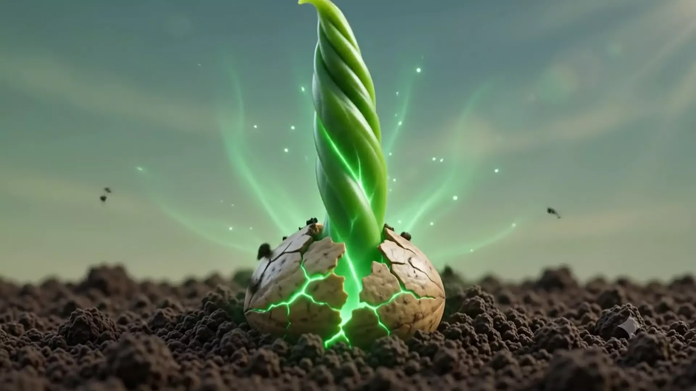

Solution 01 · Know
Unified Farm Intelligence
Every farmer, machine and acre in one living data foundation. Signals from dealers, devices and the field flow into a single intelligent core — the soil that every other solution grows from.
Chapter 00 · The seed
Every ecosystem starts as a single idea,
planted in good soil.
Solution 01 · Know
Every farmer, machine and acre in one living data foundation. Signals from dealers, devices and the field flow into a single intelligent core — the soil that every other solution grows from.
Solution 02 · Serve
AI listens to every tractor in the field and flags wear before it becomes downtime. Parts, technicians and service windows are scheduled around the harvest — not the other way round.
Solution 03 · Reach
One personalised journey across showroom, web and app. Dealers see what each farmer needs next; farmers feel known at every touchpoint, from first enquiry to trade-in.
Solution 04 · Grow
An AI advisor in every farmer's pocket — crop plans, weather calls, machine settings and finance options, answered in the farmer's own language, at the moment of decision.
The bloom
One intelligent ecosystem
Four solutions, one root system —
growing every farm it touches.

Chapter 00 · The seed
One idea, planted in good soil. From a single glowing sprout, an entire intelligent ecosystem will grow.
Solution 01 · Know
Every farmer, machine and acre in one living data foundation. Signals from dealers, devices and the field flow into a single intelligent core — the soil that every other solution grows from.
Solution 02 · Serve
AI listens to every tractor in the field and flags wear before it becomes downtime. Parts, technicians and service windows are scheduled around the harvest — not the other way round.
Solution 03 · Reach
One personalised journey across showroom, web and app. Dealers see what each farmer needs next; farmers feel known at every touchpoint, from first enquiry to trade-in.
Solution 04 · Grow
An AI advisor in every farmer's pocket — crop plans, weather calls, machine settings and finance options, answered in the farmer's own language, at the moment of decision.
The bloom
Four solutions, one root system — growing every farm it touches.